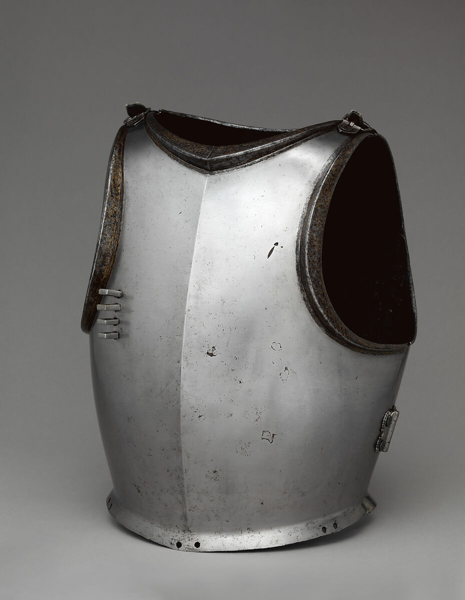
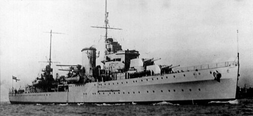
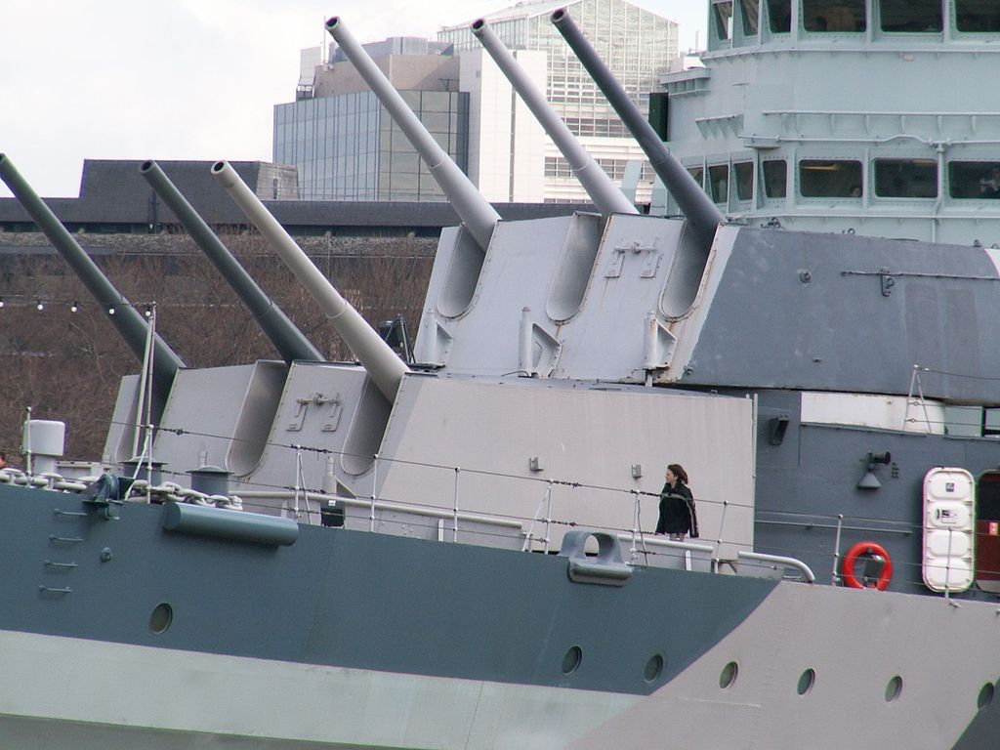
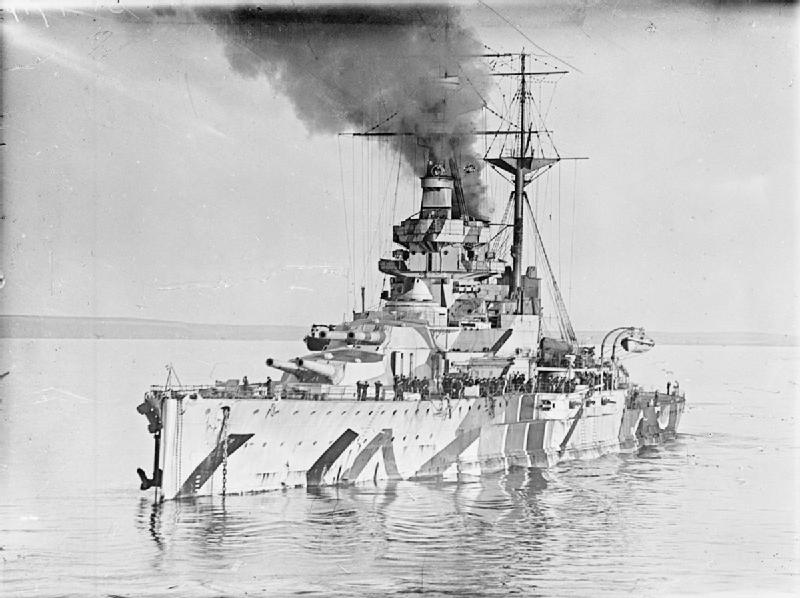
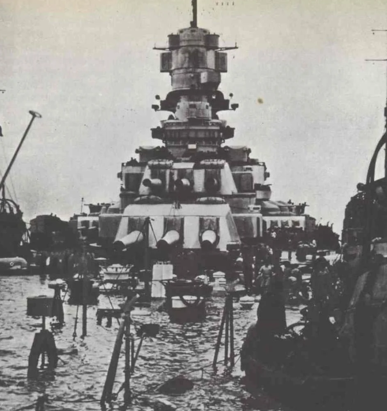
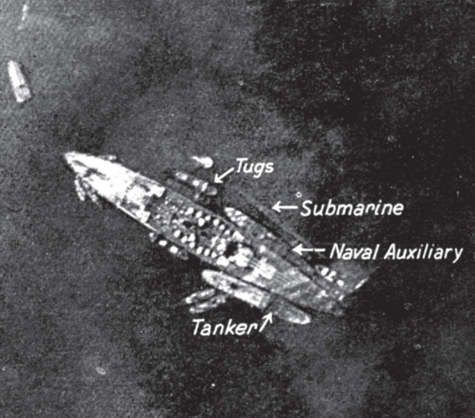
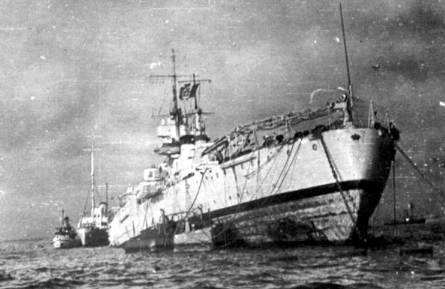

WW2 중 항모에서의 야간 작전 (31) - 제대로 골랐어야지!
게시: 2025-09-18T06:30:24+09:00
<전함의 의미> 전에도 언급했지만, 넬슨 제독이 HMS Victory를 타고 프랑스-스페인 연합함대를 무찌르던 1805년에도 그랬고 유틀란트 해전에서 영국과 독일의 함대가 맞붙은 1916년에도 그랬지만, 1940년 11월에도 제해권의 핵심은 전함(battleship, 1805년 당시의 이름은 전열함, ship of the line)의 척수에 있었음. 전함은 영어로는 battleship이고, 영어의 사촌이라고 할 수 있는 독일어에서도 영어식 표현 그대로 Schlachtschiff (쉴락트취프, 전투 Schlacht 배 Schiff). 그러나 전함의 본질을 잘 보여주는 것은 프랑스어 단어인 cuirassé (퀴라세, 영어로는 cuirassed 즉 '흉갑을 입은'이라는 뜻). 그러니까 전함의 본질은 그 장갑의 두께에 있는 것.

(흉갑은 영어로 cuirass. 단어 모양새를 보면 알겠지만 프랑스어에서 온 단어. 원래 어원은 coriaceus 라는 라틴어인데, 그 뜻은 윗 사진과는 달리 가죽이라는 뜻. 그러니까 고대 로마 시절의 초기 흉갑은 가죽으로 된 것이었는데, 어떻게 생각하면 당연한 일.)
가령 1913년 진수된, 비교적 낡은 전함이었던 Duilio (2만7천톤, 21노트)의 경우에도 측면장갑의 두께가 254mm. 1937년 진수된 최신예 전함 Littorio (4만6천톤, 30노트)의 경우 측면장갑의 두께가 350mm. 거리와 경사각 등 조건에 따라 다 다르지만, 대략 당시 영국해군 지중해 함대에 배치되었던 Leander급 경순양함 HMS Ajax (32노트, 9700톤)의 6인치 (152.4mm) 주포는 10km 거리에서 100mm 두께의 장갑을 뚫는 것이 불가능. 그러니 14~15인치의 거대한 주포를 장착한 군함이 없다면 저런 두꺼운 장갑을 부착한 이탈리아 전함들이 밀고 들어올 때 감당할 수가 없음. 그런데 반대로 14~15인치의 거대한 주포를 장착하려면 군함이 커야 하고, 결국 그런 대구경 주포는 전함만 장착 가능.

(Leander급 경순양함 HMS Ajax. 이런 순양함의 주된 역할은 정찰과 함께 적 구축함으로부터 아군 전함을 보호하는 것. 즉 함대 결전에 있어서는 어디까지나 보조적 역할.)

(이 사진은 박물관이 된 HMS Belfast에 달린 Mark 23 6인치 3연장 주포탑. 이렇게 보면 멋있어 보이지만 해전에서는 비현실적인 근거리인 5km에서조차도 140mm 정도의 장갑을 뚫는 것조차 버거움. 그러니까 전함 1척 앞에 이런 순양함 10척을 들이밀면, 그냥 10척의 순양함이 다 바닷속에 꼬로록하게 되는 것.)
그러니까, 당시 지중해나 발트해 같은 일정 해역의 제해권 장악을 위해서는, 구축함이나 순양함이 아무리 많아도 결정적인 우위를 가질 수는 없고, 오로지 저런 전함이 몇 척이나 있느냐가 중요. 그런데 1940년 10월 당시, 이탈리아 타란토 항구의 이탈리아 함대에는 전함이 6척 있었고, 영국 지중해 함대에는 4척이 있었음. 질적으로도 이탈리아 전함들은 최신예함인 리토리오급 전함 Littorio와 Vittorio Veneto 2척이 포함되어 있었으나, 영국 지중해 함대의 주력은 모두 WW1 기간 중 취역한 Queen Elizabeth급 전함들인 Warspite, Valiant, Malaya였고, 상대적으로 더 느리고 더 작은 Revenge급 전함 Ramillies가 딸려 있었음.

(Revenge급 전함 HMS Ramillies. 실은 Queen Elizabeth급 전함들과 비슷한 시기에 진수되었으나, 함포 크기와 장갑은 그대로 유지하면서 비용 측면 때문에 함체 크기와 속도를 줄인 전함으로서, 일종의 보급형 전함. 덕분에 WW2 당시에는 항모 호위 임무에조차 별로 쓸모가 없는 애물단지로 전락. 해안 포격 임무나 상선 호송 임무 정도를 수행.)
당시 이런 사실에 대해 영국해군은 전전긍긍. 말타는 물론 이집트를 지키기 위해서는 반드시 제해권 장악이 필요한데, 만약 이탈리아 해군이 작정하고 우르르 밀고 나오면 도저히 답이 나오지 않았던 것. 다행히 이탈리아 해군은 약간 겁을 먹고 WW1 당시의 독일 해군처럼 fleet-in-being, 즉 현존함대 전략('존재 자체만으로도 영국해군에게 부담과 제약을 주는 전략')을 채택하여 타란토 항구 밖으로 잘 나오지 않았음. 영국 지중해 함대는 이탈리아 해군이 자신감을 가지고 밖으로 나오기 전에, 어떻게든 이탈리아 해군 전함들 숫자를 줄여놓아야 했음. 그리고, 보잘 것 없는 Fairey Swordfish 20대가 하룻밤 동안 그걸 해낸 것. <중상인 듯한 경상이었던 Lottorio> 타란토 공습 다음날 말타의 영국공군 고속 정찰기가 고공에서 찍어온 사진을 보니 어느 전함이 어떤 피해를 받았는지 대충 파악이 되었음. 가령 리토리오는 이물쪽이 수면 아래로 가라앉았고, 기름이 흘러나오고 있었으며, 옆에는 예인선 같은 보조함들 두어 척과 함께 유조선, 그리고 특이하게도 잠수함이 옆에 달라붙어 있었음. 나중에 알았지만, 유조선은 리토리오의 연료 탱크에서 연료를 뽑아내어 조금이라도 더 가볍게 만들기 위한 작업 중이었고, 잠수함은 펌프 등 보수 작업에 필요한 전기를 제공하기 위한 '외부 발전기' 역할을 해주고 있었던 것.


리토리오는 총 3발의 어뢰를 얻어 맞았는데, 그 중 3발이 폭발. 1차 공격 때 2발, 2차 공격 때 1발을 얻어 맞았는데, 가장 큰 피해를 준 것은 첫 번째 어뢰. 이 어뢰는 우현 이물쪽에 커다란 구멍을 뚫었는데, 함체 표면뿐만 아니라 내부의 방수 격벽까지 뚫어서 많은 양의 바닷물 침수를 일으킴. 두 번째 어뢰는 좌현 고물쪽에 상대적으로 작은 구멍을 뚫었는데, 이로 인한 침수는 제한적이라서 내부의 2개 방수 구역만 침수시키고 끝남. 다만 그 폭발 충격으로 방향타 및 관련 시스템들이 고장남. 세 번째 어뢰도 우현 이물쪽. 여기도 비교적 큰 구멍이 뚫렸고 많은 침수가 발생.

(리토리오의 피격 모습을 보면 결국 어뢰 잠항 심도가 의도한 것보다 얕았기 때문에 함체의 아래로 지나가서 자기 신관이 반응한 것이 아니라 함체 옆면을 들이받고 접촉 신관에 의해 폭발한 것.)
실은 2차 공격 때 리토리오는 어뢰를 2발 얻어 맞았는데, 그 중 마지막 것은 폭발하지 않고 바로 그 밑의 진흙 속에서 발견됨. 기폭되지 않은 4번째 어뢰가 있었다는 것을 알게된 것은, 이탈리아 해군이 리토리오의 피해를 조사하다 우현 후미 함체 표면에 뭔가 강하게 얻어맞아 움푹 들어간 자국을 발견했기 때문. 혹시나 싶어서 조사해보니 역시나 그 밑 진흙 속에서 폭발하지 않은 어뢰가 발견된 것. 아무리 급하다고 해도 언제 폭발할지 모르는 어뢰를 바로 밑에 둔 채로 전함 예인 작업을 할 수는 없는 일. 이 어뢰 해체 작업에는 1달이 걸렸고, 덕분에 리토리오가 드라이독으로 이동을 시작한 것은 거의 2달이 지난 12월 11일.

(고물 아래 쪽에 어뢰 있어요!)
그러나 명중하지 않은 어뢰까지 포함하여 총 12기의 어뢰 중 무려 5발의 집중 난사 대상이 되었던 리토리오는 겉으로 보기엔 꽤 큰 피해를 입었으나 의외로 치명상을 입지는 않았음. 비록 많은 침수로 인해 이물쪽이 착저, 즉 항구 바닥에 닿아서 사실상 격침된 것이나 다름 없었으나, 엔진부와 용골 등은 멀쩡했기 때문. 그래서 다음 해 3월 11일까지, 드라이 독에 들어간 지 불과 3개월 정도만에 리오리오는 모든 손상을 수리하고 복귀.
이렇게 보면 어뢰 1방에 1달씩 입원한 셈. 명중한 어뢰는 3방이고 3개월간 드라이독에 들어있었는데, 명중했으나 폭발하지 않고 그 밑 진흙에 처박혀 있던 불발 어뢰를 제거하느라 리토리오의 드라이독 입고가 1달 늦어졌으니 정말 1방에 1달씩인 셈. 이 부분에 대해서 영국해군 수뇌부는 좀 입맛을 다셨는데, 비록 대공포탄이 난무하는 어둠 속에서 목표물을 입맛대로 고르는 것이 어렵긴 했겠으나, 너무 많은 소드피쉬들이 제일 앞에 보이는 가장 큰 전함인 리토리오를 목표물로 골랐기 때문에 이런 일이 벌어졌던 것. 만약 같은 리토리오급 전함인 Vittorio Veneto에도 명중탄을 냈다면, 당시 이탈리아에는 3만톤급 전함이 들어가서 수리를 할 만한 드라이 독이 딱 하나 밖에 없었으므로, 수리 기간이 훨씬 더 오래 걸렸을 것이기 때문. 실은 비토리오 베네토에게도 2기의 소드피쉬가 달려들어 어뢰를 투하하긴 했음. 그러나 다 빗나갔던 것. 이미 언급했다시피, 그렇게 빗나간 두 발의 어뢰 중 한 대는 운 좋게도 그 뒤에 계류되어 있던 Conte di Cavour를 명중시킴. 그런데 더 엉뚱하게도 이렇게 '빗나가도 명중'이라는 불운을 겪은 카부르에게도 원래 3기의 소드피쉬가 어뢰를 투하했었으나 모두 빗나가거나 기폭되지 않았음. 반면 Duilio는 딱 한 기의 소드피쉬가 목표로 삼았고, 그게 명중. 나마지 1대의 소드피쉬는 목표물을 잘못 잡아 전함이 아니라 중순양함에 불과한 Gorizia를 목표로 삼았는데, 그마저 빗나감.